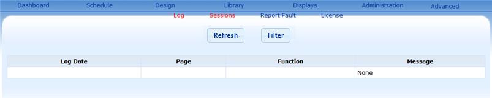
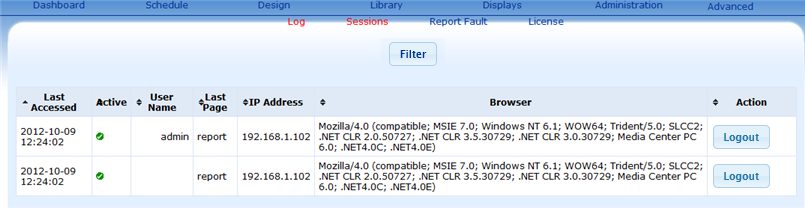

The Advanced page is mainly used by system administrator to help troubleshooting system problem or reporting fault to the Xibo xstreamedia team for assistance
Click Advanced from the Navigation Bar. System loads the Log page by default.
System Log

The system log is used to help troubleshoot problems with Xibo. When you encounter an error it will be logged and listed in the system here. These error messages can help the xstreamedia team solve your problem.
Truncating the log helps you to troubleshoot a problem by clearing the current error messages
The page and sub page items helps locate where the error has been generated from.
- Log Date
states the date and time the error message was logged.
- Page
states the page that the error has been generated from.
- Function
state function that the error message has been generated from.
- Message
gives details of what error has occurred in the system.
Sessions
Sessions provide details of the current user activity on the network

Report Fault
Simple instruaction on the collection of system error and report fault to Xibo xsteamedia team.
License Information
The license page provides details of all the relevant licenses for the system.